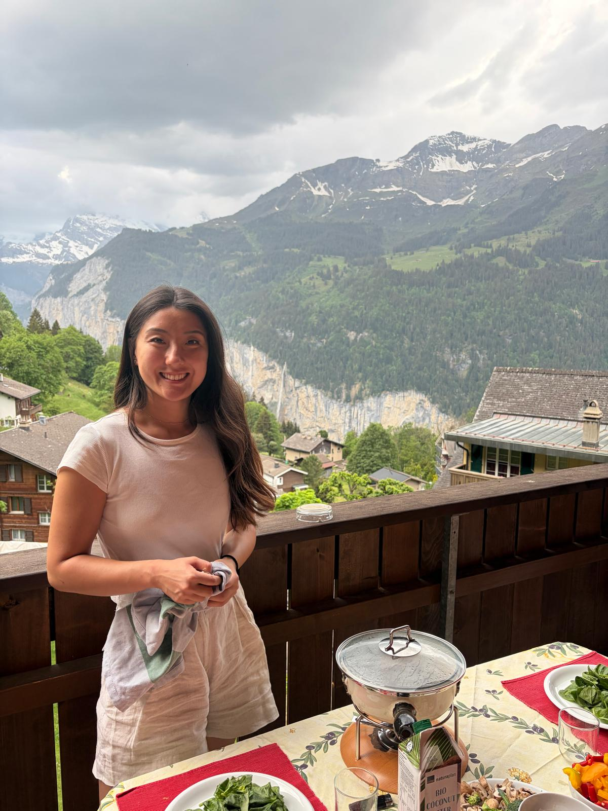
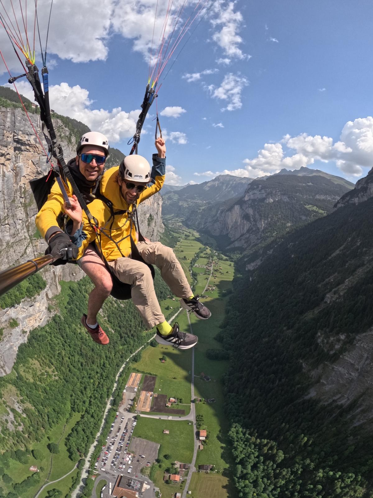
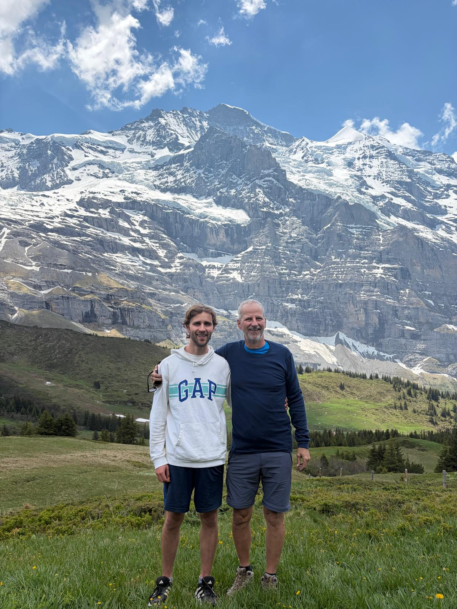

← Travel
Wengen 2026
We went for a more traditional stay in Wengen with Dad and Bettina, in the heart of the most beautiful part of Switzerland.

26th May 2026
We took the scenic train from Montreux into Interlaken, a beautiful Swiss town nestled between two lakes (hence interlaken!). We stopped off to try and see some marmots but to no avail, although we did see the ibex which were at one point very endangered (I believe more were brought from another country, Spain?). Our ultimate destination was Wengen, a charming alpine village known for its traditional architecture and stunning mountain views. In the spirit of the traditional Swiss chalet, we tried to make our own fondue! Some boiling stock and chunks of meat with vegetables were enjoyed even if it probably didn't meet the standard of a proper Swiss fondue. A final walk as the sun set over the mountains took us past llamas and cows with their bells jingling in the evening breeze.

27th May 2026
As a result of our somewhat newfound love of cycling, we decided to try some mountain biking with e-bikes! This was a very brave choice considering the steepness of the land. We took our bikes down a windy trail, almost falling off at several points. Eventually we made it to the bottom and it was just in time to take our cable car up to our paragliding spot. None of us had done paragliding before but the valleys near Wengen provided the perfect opportunity to do so. After seeing people running off steep slopes we were skeptical but the feeling of lifting up into the air was incredible! We were in the air for ages and ages, catching updrafts and soaring with the birds. The feeling was incredible, maybe less so when we started doing circles and diving in the air but it was a truly incredible experience and something I would do again. Afterwards we walked across the villages at the top of the valley, stopping to smell the roses before heading back to our chalet for a rest.

28th May 2026
Today we decided to take our e-bikes up the mountain instead of down to get a good view of the Eiger. The path wasn't easy, and we had a loose chain which Dad fixed along the way, but the e-bikes prevailed in the end. We had a spectacular view of the famous peaks, Eiger, Jungfrau and Mönch, with barely any obstructions! We took the scenic way down to enjoy the ride and the scenery. This part of Switzerland is truly the most beautiful places in the world.